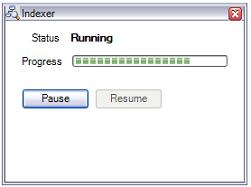
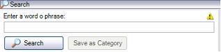

The Full-Text Search capability requires internal use of the index of all the elements that make up a Knowledge Base to quickly report search results. Because large volumes of information can take a long time to index, the user can monitor the process to know its status, and can even pause the process and resume it at any time. To access the monitor view, open the Indexer Monitor option in the Tools menu. It should be noted that while the process is in Running (incomplete) status, a search may give partial results. The user is alerted of this by a warning icon shown in the search window.   The following situations should be considered:
Tip: To know what the index status is (i.e., whether the indexer is running or not) use the View/Tool Windows/Indexer Monitor option.
Note: "The FTIndex subdirectory, within a KB directory, saves the KB full text indexes. ( if the kb has a lot of objects / versions ) that folder may growth considerably. If you don't want consume that disk space, you can stop that process and delete the directory FTIndex. ( In such case you can't use the “Search” inside of that kb )" |
| Backlinks |
| Knowledge Manager Import |